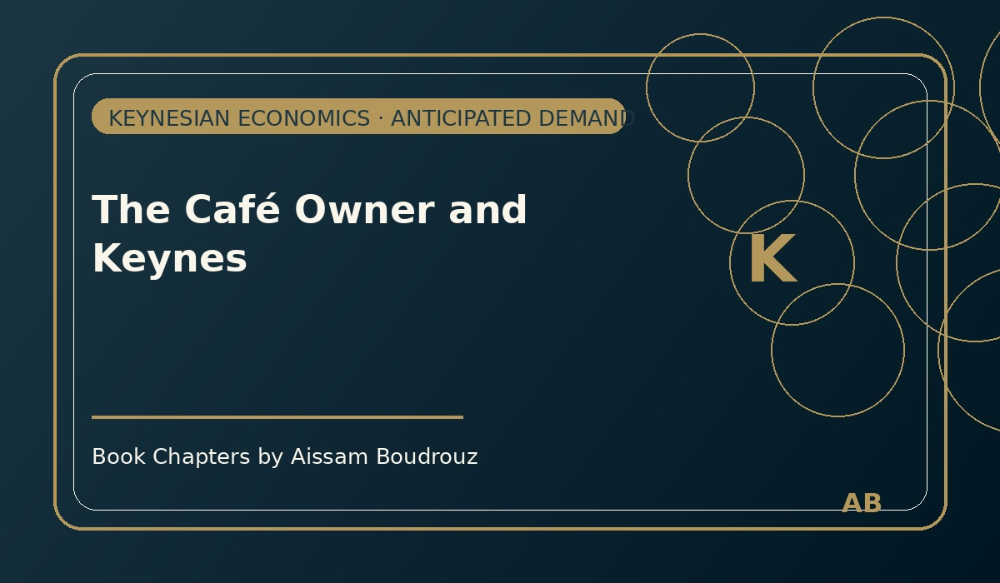

The Café Owner and Keynes
It was sometime around 2019, before I moved to Canada — a warm evening in El Jadida, the kind of coastal calm that makes you want to sit outside and let time pass slowly.
I was at my favorite café, the one near the corniche with the noisy TV and the best mint tea in town. The waiter already knew my order — glass of tea, extra mint, less sugar.
The Africa Cup of Nations was about to begin, and everyone was talking about football. The terrace was buzzing — chairs scraping the tiles, voices rising, arguments over who would score first.
And me? I was there to watch Barcelona, as usual. Yes — I've been a Barça fan since the Ronaldinho days. That smile, that joy, the magic of his feet — that's when football stopped being just a sport for me.
As I looked around, I noticed something new. The café was fuller than ever. Dozens of bright plastic chairs had appeared out of nowhere, stretching all the way to the sidewalk.
I laughed quietly. I knew exactly what was going on.
The businessman with a theory
Moul l'qahwa — the café owner — was walking around like a field marshal before a final. A week earlier, none of those chairs existed. But now, there were at least twenty.
That's when my economist brain woke up.
He wasn't just preparing for the match — he was unconsciously applying Keynesian economics, what we call demande anticipée or anticipated demand.
Keynes once explained that investors must predict tomorrow's demand before they act today, otherwise they risk overproduction or loss. And here was Moul l'qahwa, the Moroccan version of a Keynesian entrepreneur — expanding his "capacity" because he anticipated a surge in customers once the national team started playing.
He had invested before the event — not because demand was already there, but because he believed it would come.
A lesson in optimism
I imagined him earlier that week, sitting behind the counter, counting tables and thinking aloud:
"Tomorrow's the Cup. People will come in groups, shouting, drinking tea. I need more chairs."
So he went to the market, bought the cheapest plastic chairs — not the fancy kind, the "God help your back" kind — and filled the café with them.
That's demand anticipation in action. When entrepreneurs expect higher demand, they invest today to meet it tomorrow. It's one of the quiet ways optimism fuels the economy — small actions that multiply into movement.
When theory meets reality
Of course, every theory faces the real world. If the national team got eliminated early — and as any Moroccan knows, that risk was always high — the café would empty again. Those new chairs would become just plastic memories stacked in a corner, symbols of the fine line between smart planning and overconfidence.
So there I was, a young economist-to-be, sitting in a noisy Moroccan café, sipping mint tea and watching both football and economics unfold before my eyes.
Maybe Keynes never imagined his theory being tested in a seaside café before a football match. But if he had spent one night there, I'm sure he'd have updated his book with a new chapter called:
"The Plastic Chair Principle."
← Back to Articles